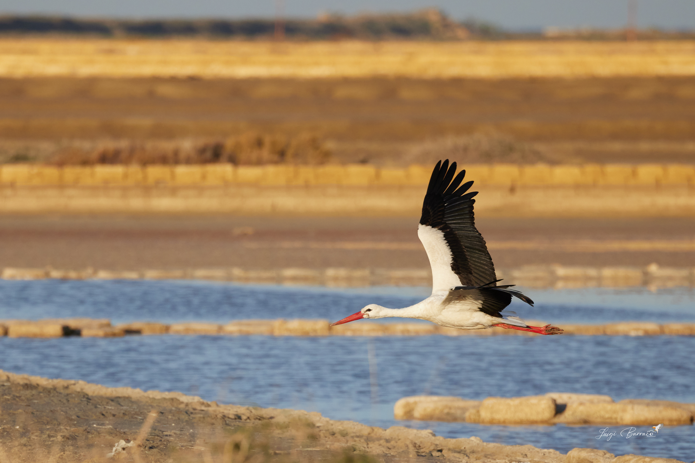
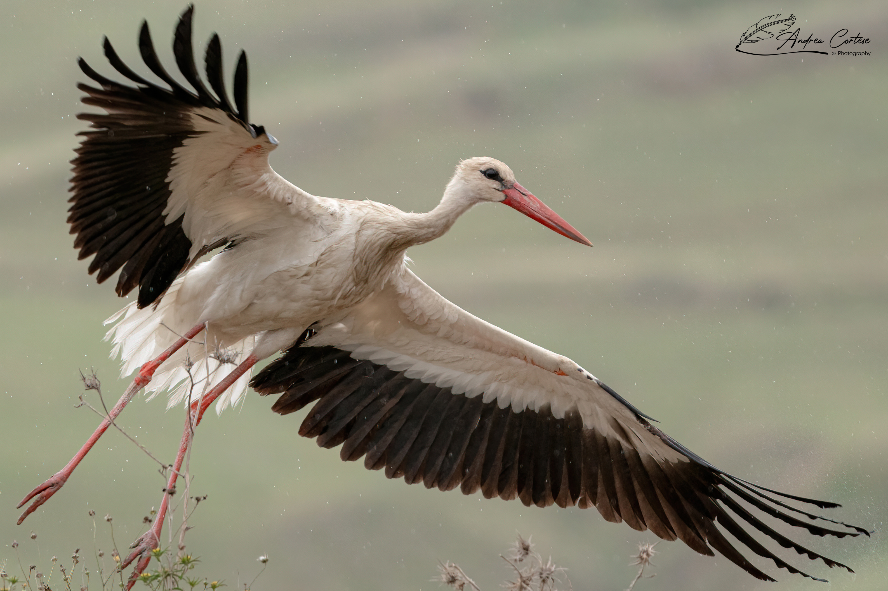
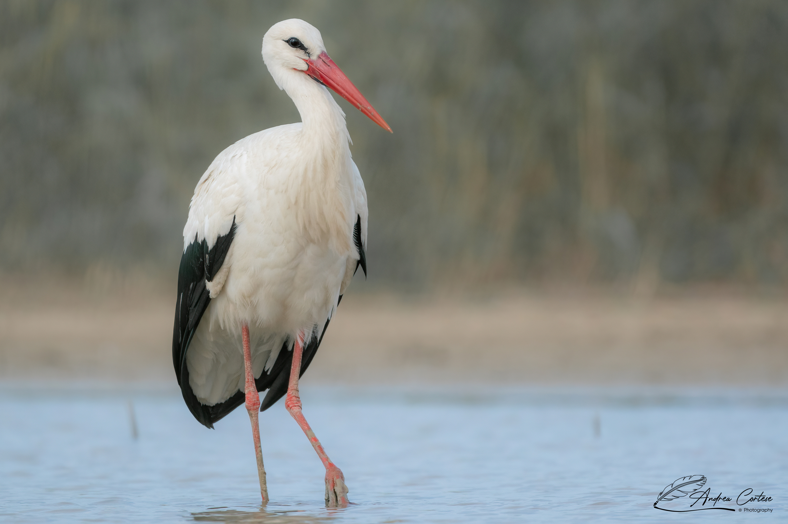
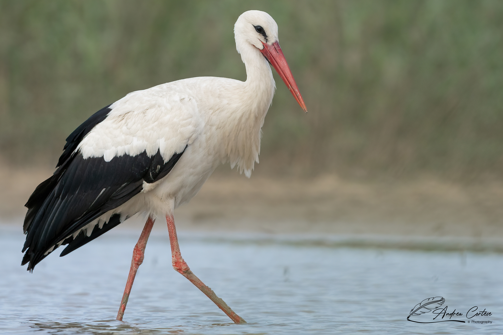
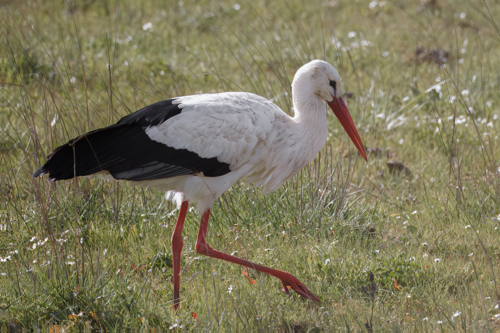
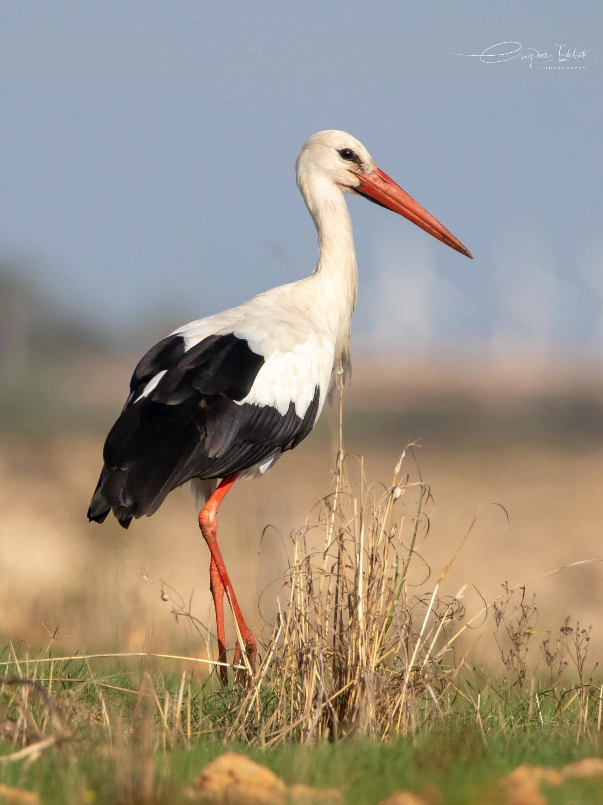

Cicogna bianca
Ciconia ciconia
Ciconiiformes
Pelacaniformi






La Cicogna bianca è un simbolo di buon auspicio e fertilità in molte culture. Grande migratrice, annuncia l’arrivo della primavera e ha un forte legame con l’uomo, nidificando spesso su tetti e campanili.
Distribuzione e Habitat
Distribuzione Globale Europa, Nord Africa, Asia Minore e Medio Oriente. Svernante in Africa sub-sahariana.
Habitat Preferito Zone agricole aperte, prati umidi, risaie e bordi di zone umide dove caccia camminando.
Presenza in Sicilia Nidificante (in ripresa grazie a progetti di conservazione, es. Piana di Gela, Piana di Catania) e migratrice regolare.
Status nelle Saline Si osserva regolarmente durante le migrazioni (primavera e autunno) mentre sosta sugli argini o sorvola l’area in termica (sfruttando le correnti ascensionali).
Descrizione della Specie
Ciconia ciconia (Linnaeus, 1758)
Cicogna bianca, White Stork (EN), Cigogne blanche (FR)
Caratteristiche Morfologiche Uccello di grandi dimensioni (100-115 cm, apertura alare fino a 215 cm). Piumaggio bianco con le remiganti (penne delle ali) nere. Becco lungo, dritto e appuntito rosso vivo (nero nei giovani). Zampe lunghe e rosse.
Comportamento Vola a collo disteso (a differenza degli aironi). È muta, ma comunica attraverso il “bill-clattering” (batte il becco velocemente producendo un suono ritmico simile a nacchere) durante il corteggiamento al nido.
Alimentazione Carnivora generalista: cavallette, coleotteri, anfibi, rettili, piccoli mammiferi.
Riproduzione Nidifica su strutture elevate (alberi, pali elettrici, edifici). Il nido è una grande piattaforma di rami riutilizzata e ampliata ogni anno.
Elettrocuzione su linee elettriche.
Uso di pesticidi nelle aree di alimentazione, perdita di zone umide lungo le rotte migratorie, bracconaggio.
Status di Conservazione IUCN: LC.
Credits Fotografici
Marco Valentini
Foto 1, Foto 3
Sara Monteleone
Foto 2
Giuseppe Giordano
Foto 4